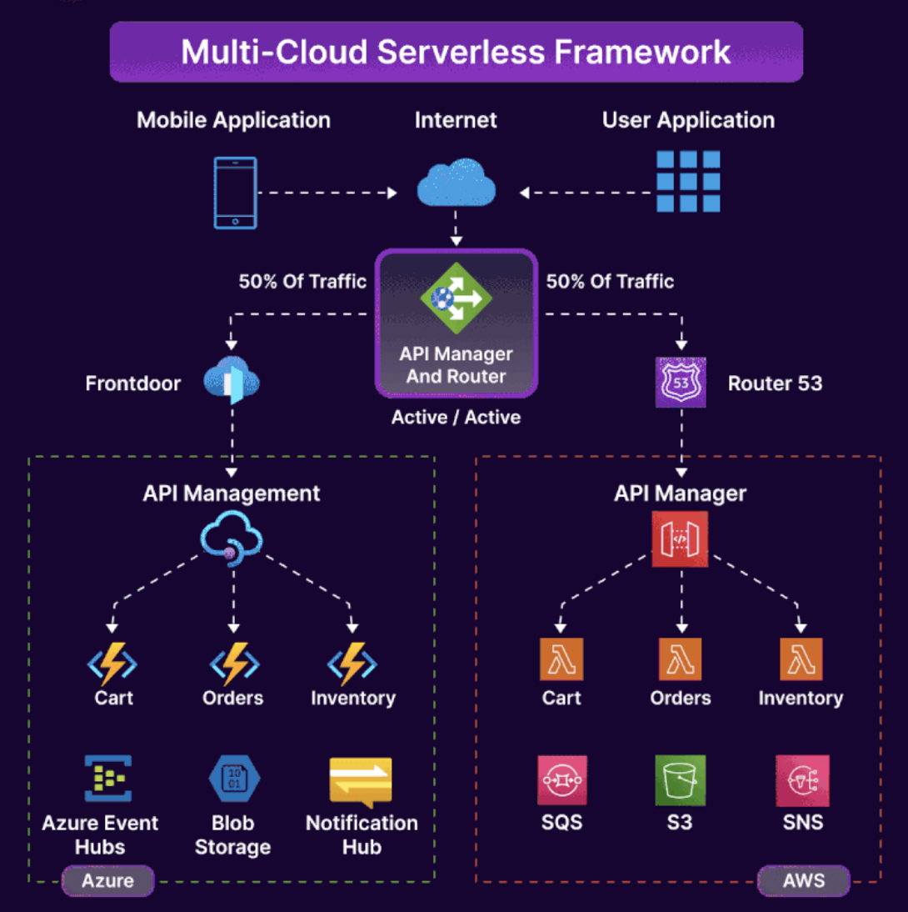

Multi-Cloud Application Reference Architecture
In today's dynamic cloud landscape, flexibility and redundancy are key. This architecture showcases how to achieve multi-cloud integration using a serverless approach and modern CI/CD practices.
How Multi-Cloud Application Reference Architecture Works
The design enables a user’s app to seamlessly connect from any source to a gateway app that distributes requests equally between Azure and AWS clouds. This dual-cloud architecture ensures robustness and availability, with responses routed through an API Manager gateway for a smooth user experience.
The Serverless Framework
At the heart of the solution is the Serverless Framework, simplifying infrastructure management and automating deployments. This manifest-based approach enables developers to drive serverless solutions across multiple clouds with ease, maintaining consistent deployment processes and tooling.
Azure Integration
For Azure, the architecture uses Node.js, Azure Functions, and the Serverless Multi-Cloud Library. The Azure Functions Serverless Plugin extends the framework’s capabilities, achieving parity with AWS Lambda and ensuring a consistent developer experience.
CI/CD with GitOps
The design implements GitOps-driven serverless builds, tests, and deployments, streamlining the development workflow. Automated pipelines enable quality gating and consistent, repeatable deployments across providers, making teams more agile and efficient.
Potential Use Cases
- Develop client-side apps with a cloud-agnostic API from the Serverless Multi-Cloud Library.
- Deploy functional microservices across multiple cloud platforms.
- Build applications that are cloud-agnostic without worrying about underlying infrastructure.
Blue-Green Deployment
The architecture adopts Blue-Green Deployment strategies in a multi-cloud context. Each cloud platform hosts duplicate microservice sets, creating active-passive environments that improve availability and reduce deployment risk. This approach ensures high availability while minimizing service disruption.
In a world where multicloud is the future, this architecture demonstrates how to embrace that complexity while keeping operations reliable, maintainable, and developer-friendly.